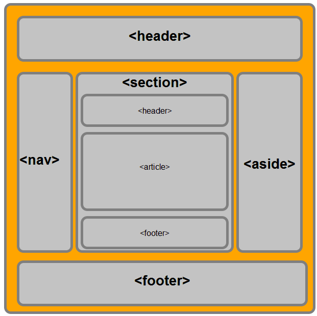

Desenvolvimento Web
Na disciplina de Desenvolvimento Web, exploramos a criação de páginas e aplicações web utilizando tecnologias como HTML, CSS e JavaScript. A seguir, estão descritos os principais conceitos abordados, com ênfase em HTML5 e o Modelo de Objetos do Documento (DOM).
HTML5
HTML5 é a quinta e mais recente versão do HyperText Markup Language (HTML), a linguagem padrão para criar páginas web. Ele introduz novas funcionalidades que facilitam o desenvolvimento de websites modernos e interativos.
Header: Define o cabeçalho de uma seção ou página.Nav: Define uma seção de navegação.Section: Define uma seção genérica em um documento.Article: Define um conteúdo independente.Aside: Define um conteúdo relacionado ao conteúdo principal.Footer: Define o rodapé de uma seção ou página.
Formulários Aprimorados
HTML5 também traz melhorias significativas nos formulários:
- Novos tipos de input, como email, tel, url, number, date, etc.
- Atributos como placeholder, required, pattern, entre outros, para validação e usabilidade.
Exemplos:
DOM (Document Object Model)
O Modelo de Objetos do Documento (DOM) é uma interface de programação para documentos HTML e XML. Ele representa a estrutura de um documento como uma árvore de nós, onde cada nó é um objeto representando uma parte do documento, como elementos, atributos e texto.
Interação com o DOM usando JavaScript
Acessar ElementosgetElementById: Seleciona um elemento pelo seu ID.getElementsByClassName: Seleciona elementos pela sua classe.getElementsByTagName: Seleciona elementos pelo nome da tag.querySelector e querySelectorAll: Seleciona elementos usando seletores CSS.
Modificar Conteúdo
innerHTML: Altera o HTML interno de um elemento.textContent: Altera o texto interno de um elemento.setAttribute: Altera atributos de um elemento.
CSS (Cascading Style Sheets)
CSS é chamado de linguagem Cascading Style Sheet e é usado para estilizar elementos escritos em uma linguagem de marcação como HTML. O CSS separa o conteúdo da representação visual do site. Decoração da página
Objetivos- Estilizar e formatar elementos HTML para melhorar a apresentação visual e a usabilidade de um site.
- Criar layouts responsivos que se adaptem a diferentes dispositivos e tamanhos de tela.
- Melhorar a acessibilidade e a experiência do usuário através de técnicas de design.
Seletores CSS: São padrões usados para selecionar os elementos HTML aos quais se aplicarão as regras de estilo.Propriedades CSS: São os atributos que definem o estilo dos elementos selecionados, como cor, tamanho da fonte, margens, etc.Valores CSS: São os valores específicos atribuídos às propriedades CSS para definir a aparência e o comportamento dos elementos.
JavaScript
O JavaScript surgiu como uma tecnologia do lado do navegador para tornar as aplicações Web mais dinâmicas. Ao usar JavaScript, os navegadores passaram a ser capazes de responder a interações do usuário e alterar o layout do conteúdo na página.
Síntese do funcionamento do JavaScript (lado do cliente)- O navegador carrega uma página da Web quando você a acessa.
- Durante o carregamento, o navegador converte a página e todos os seus elementos, como botões, rótulos e caixas de menu suspenso, em uma estrutura de dados chamada Modelo de Objeto de Documento (DOM).
- O mecanismo JavaScript do navegador converte o código JavaScript em código de bytes. Esse código é um intermediário entre a sintaxe em JavaScript e a máquina.
- Eventos diferentes, como o clique do mouse em um botão, acionam a execução do bloco de código associado em JavaScript. Em seguida, o mecanismo interpreta o código de bytes e faz alterações no DOM.
- O navegador exibe o novo DOM.
O termo JavaScript do lado do servidor se refere ao uso da linguagem de codificação na lógica de back-end do servidor. Nesse caso, o mecanismo JavaScript está diretamente no servidor. Uma função de JavaScript do lado do servidor pode acessar o banco de dados, realizar diferentes operações lógicas e responder a diversos eventos acionados pelo sistema operacional do servidor. A principal vantagem da criação de script do lado do servidor é que você pode promover um alto nível de personalização na resposta do site com base em seus requisitos, seus direitos de acesso e nas solicitações de informação recebidas do site.
Projetos
CalculadoraUtilizamos HTML para estruturar a calculadora, CSS para estilização e JavaScript para implementar a lógica das operações matemáticas.
Tags de cabeçalho (head): Incluem metadados como o charset e o título da página.Tags de texto (input): Usada para o display da calculadora.Tags de formulário: Como (input) e (button), permitem a entrada de dados do usuário.Tags auxiliares: (div) é utilizada para organizar o layout.Manipulação da árvore DOM: onclick nos botões para chamar funções JavaScript que manipulam o display da calculadora.
Utilizamos HTML para estruturar a tela de login, CSS para estilização e JavaScript para validação e interatividade.
Ver Projeto de Tela de LoginConceitos de JavaScript Aplicados
Validação de Formulário: Funções para verificar se os campos obrigatórios estão preenchidos corretamente antes da submissão.Interatividade: Manipulação do DOM para mostrar mensagens de erro ou sucesso conforme necessário.
No projeto "Cadastro de Squads", criamos uma aplicação web que permite cadastrar e gerenciar squads de forma eficiente. Utilizamos HTML para estruturar a aplicação, CSS para estilização e JavaScript para a lógica de manipulação de dados e interatividade.